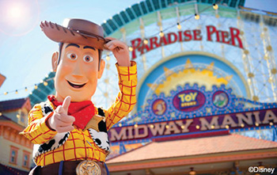
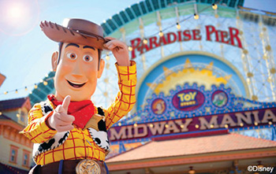

Top 5 Parks
in SoCal
 



These are the Top 5 Amusement parks in SoCal!
If you ever visit California, make sure to check these parks out!
They are known for their food, characters, and of course, rides!